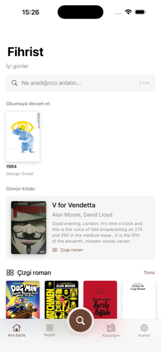
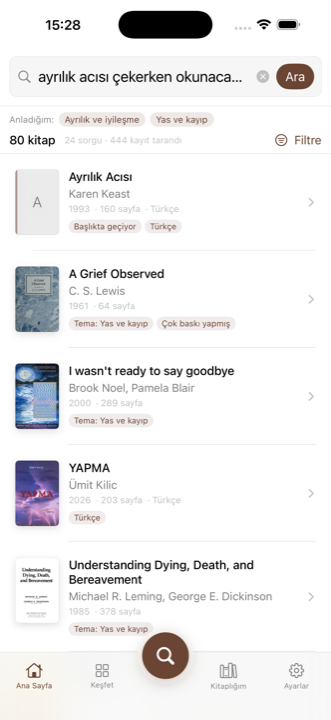
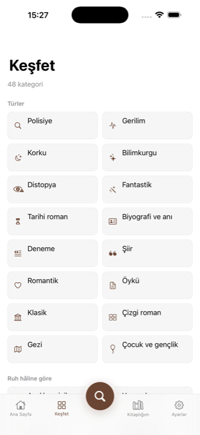
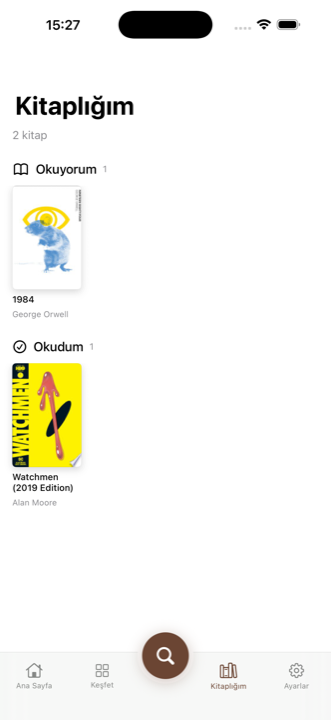

Kitap adını bilmenize gerek yok. Ne aradığınızı gündelik Türkçeyle anlatın; Fihrist bunu tema, tür ve dönem sorgularına çevirip iki kataloğu birden tarasın.

Arama kutusuna yazdığınız cümle olduğu gibi kataloğa gönderilmiyor. Önce ne demek istediğiniz çözümleniyor, sonra bu anlam kataloğun anladığı dile çevriliyor.
Cümle Türkçe köklerine ayrılıyor; ruh hâli, tür, tema, yazar adı ve yıl aralığı ayıklanıyor. “Dostoyevski’nin” yazsanız da ekler ayrılıp yazar doğru bulunuyor.
Tek arama, onlarca katalog sorgusuna dönüşüyor — Türkçe baskılar için ayrı bir kol da dahil. “Ayrılık acısı”, separation ve grief konularına bağlanıyor.
Gelen yüzlerce kayıt eser düzeyinde tekilleştiriliyor, kaynaklar tek kayda birleşiyor. Her kitabın yanında neden geldiği yazıyor.
tipik bir aramada taranan katalog kaydı
Keşfet ekranında hazır kategori
katalog: Open Library ve Google Books
Sonuçların yanındaki rozetler, sıralamanın nerede isabet ettiğini görmenizi sağlıyor — kapalı bir kutu değil.



Kitaplığınız ve notlarınız yalnızca cihazınızda saklanır; hiçbir sunucuya gönderilmez. Hesap açmak zorunlu değil — ücretsiz hesap sadece günlük arama hakkınızı 5’ten 50’ye çıkarır. Reklam yok, izleme yok.
Gizlilik politikası